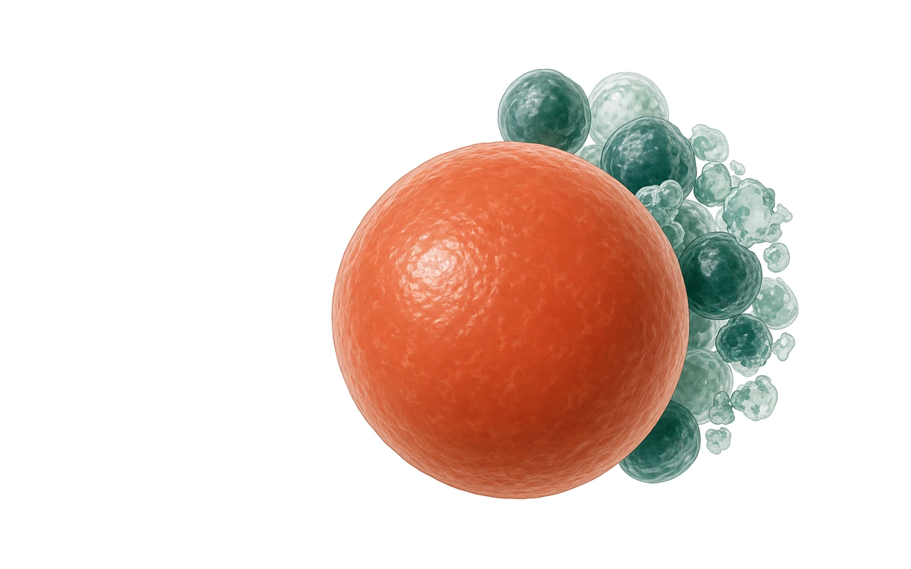
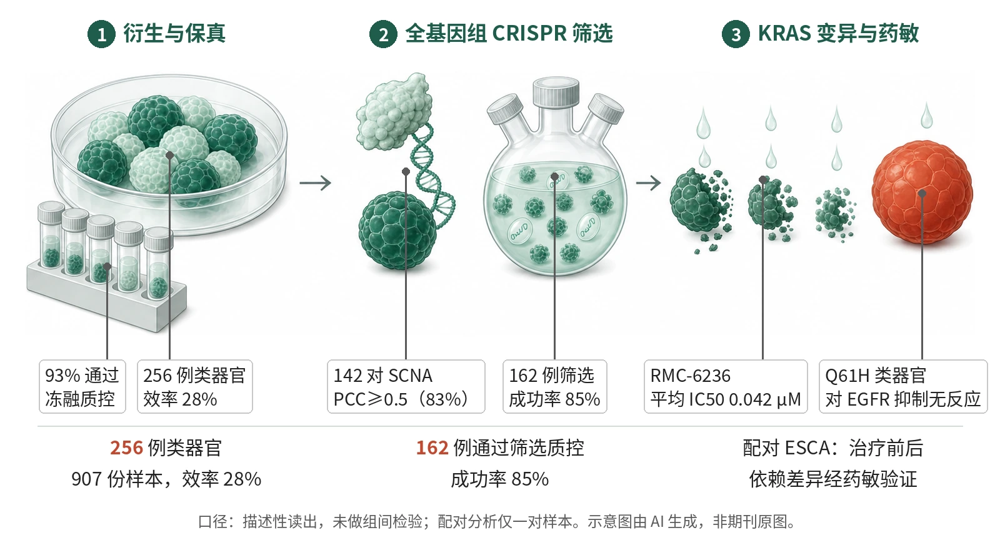

封面示意：前景是一枚放大的肿瘤类器官（赤陶色），身后是成簇的绿色类器官，寓意大规模类器官样本库。图片由 AI 生成，非原文图片。
英国多中心团队从 907 份样本中建立 256 例肿瘤类器官（效率 28%），162 例完成通过质控的全基因组 CRISPR–Cas9 筛选（成功率 85%）。

- 五中心取样，集中衍生 256 例类器官
- 171 对配对：142 对 SCNA PCC≥0.5
- 162 例类器官完成 CRISPR 筛选
- G12X 与 Q61H 的 EGFR 依赖不同
- 配对 ESCA 的依赖差异经药敏验证
左：多中心样本经集中衍生形成类器官库，并与配对肿瘤做基因组比对；中：类器官经全基因组 CRISPR 筛选；右：KRAS 变异类器官对 EGFR 抑制的反应不同，Q61H 类器官无反应（赤陶色）。示意图由 AI 生成，依据原文结果绘制，非期刊原图，不代表分子比例。
研究背景与待解问题
癌细胞系是肿瘤研究与药物发现的基础，但约 1,000 株常用人癌细胞系对部分亚型代表性偏倚或缺失，缺少患者配对的种系数据以准确识别体细胞变异，也缺少患者临床信息，且多数在体外培养中发生机制不明的适应性改变。
肿瘤类器官是源自患者组织的三维培养，但现有最大的两个学术库仅含 115 和 96 个模型，不少缺乏全面的基因组注释。此外，培养更复杂的大型异质类器官库能否支撑系统的癌症依赖性图谱，此前并不清楚。本研究与人类癌症模型计划（HCMI）合作，尝试回答这一问题。
研究设计
这是资源型研究，非临床试验，原文未报告面向组间比较的效能设计。五个临床中心提供手术或活检肿瘤及种系正常样本，2016 年 5 月至 2023 年 11 月送至 Sanger 研究所集中衍生。涵盖 COAD/READ、ESCA、OV、PAAD、STAD 五种癌症。成功标准为扩增至超过 25 million 个细胞并冻存 25 支，通过冻融质控，且 SNP 与原肿瘤一致。
每个类器官均做全基因组测序，其中 171 例有配对肿瘤组织可比较；类器官另做 RNA 测序。CRISPR–Cas9 筛选在 5% BME-2 悬浮培养中进行，以 MinLibCas9 为主，共 21 天、三个重复。药敏实验在 17 例 KRAS 突变和 4 例野生型结直肠类器官中进行，涵盖泛 RAS、KRAS 特异、变异特异抑制剂及 EGFR 抑制剂。
核心结果
衍生效率与基因组保真
256 例类器官来自 907 份样本、878 名供者，总体效率 28%；计入短期培养并排除低细胞量样本后为 65%，与既往研究相当；入库后 93% 通过冻融质控。171 对类器官—肿瘤配对中，突变负荷 PCC 为 0.786，结构变异 PCC 为 0.823，全基因组 SCNA 中位 PCC 为 0.78，142 对（83%）PCC 至少 0.5，提示基因组保真度较高。
CRISPR 筛选规模与质量
平台以 5% BME-2 悬浮培养和 MinLibCas9 文库为主，16 例同时用 Yusa v1.1。CRISPR–Cas9 筛选在 162 例类器官中通过质控（85 例 COAD/READ、59 例 ESCA、11 例 OV、4 例 PAAD、3 例 STAD），成功率 85%。区分参考必需与非必需基因的 AUROC 为 0.97、AUPR 为 0.973，细胞系分别为 0.92 和 0.9；但每例类器官适应性基因中位数为 1,440（范围 297–2,160），低于 930 株细胞系的 2,507。
核心适应性基因与生物标志物
ADaM 分析得到 654 个与细胞系共有的核心适应性基因，以及 97 个类器官特有的核心适应性基因，后者富集于类固醇生物合成（P = 1.38 × 10−6）。线性回归得到 1,841 个显著的基因—生物标志物关联；COAD/READ 中 WRN 依赖与 RNF43 突变相关（效应量 −0.747，校正 P = 0.01），但 4 例 MSI 类器官不依赖 WRN，也缺少扩增的 TA 二核苷酸重复。
KRAS 等位基因与 EGFR 依赖
85 例 COAD/READ 类器官中，G12X 的 KRAS 依赖最强，EGFR 与 PTPN11 依赖也更高。17 例 KRAS 突变和 4 例野生型的药敏中，野生型与 G12X 对 EGFR 抑制剂更敏感，Q61H 类器官无反应；G12C 特异抑制剂 sotorasib 选择性作用于 G12C 类器官（P = 0.044）。全部类器官对 RMC-6236（平均 IC50 0.042 μM）和 RMC-7977（0.023 μM）高度敏感；BI-2865 与 ACBI3 的平均 IC50 均不低于 10 μM。
治疗前后配对类器官
一名 69 岁男性化疗前后的配对 ESCA 类器官中，治疗后类器官丢失 MYC 扩增，MYC 依赖降低；CRISPR 还提示 KRAS 与 DNMT1 依赖降低、PSMB5 依赖升高。药敏与之一致：治疗后类器官对两种泛 RAS 抑制剂和两种 DNMT1 抑制剂敏感性降低，对两种蛋白酶体抑制剂更敏感。TOP2A 依赖及依托泊苷（TOP2A 抑制剂）敏感性均无差异，作对照。
机制解读
原文实验证明：回归分析显示，COAD/READ 中 WRN 依赖与 SBS44 特征相关（效应量 −0.823，校正 P = 0.0009），CCNE1 扩增与 ESCA 类器官的 CCNE1 依赖相关（效应量 −0.645，校正 P = 3.65 × 10−5）。这些是基因—特征的统计关联，并非对每个基因的逐一干预验证。
EGFR 依赖与药敏相互印证：CRISPR 中 EGFR 依赖高的类器官属于对 afatinib 和 gefitinib 最敏感者；撤除 EGF 后，Q61H 类器官活力未下降，而 G12X 或野生型类器官活力下降。配对 ESCA 类器官中，CRISPR 预测的依赖差异经药敏实验验证。
作者推测：作者推测，G12X 肿瘤对上游受体激活仍有反应，而不依赖信号输入的 Q61X 变异则不然，这可能解释 Q61X 突变在结直肠癌 EGFR 抑制剂继发耐药中的富集。作者还推测，类器官特有核心基因富集类固醇合成可能与胆固醇调控肠干细胞有关；治疗后 MYC 扩增丢失则被解读为化疗压力下的克隆演化。
局限与不确定
- 类器官与肿瘤的体细胞突变一致性有限：171 对中仅 76 对（44%）共享至少 75% 的体细胞突变；一致性随肿瘤纯度升高而增加，纯度低时可能被低估，MSI 结直肠肿瘤的 SCNA 相关性也较低。
- 核心适应性基因集仅含三种癌症类型（PAAD 与 STAD 被排除），不代表泛癌；作者提到标准化培养条件可能改变依赖性，且配对正常细胞很少，难以评估治疗窗口。
- 筛选的癌种样本量悬殊（OV 11 例、PAAD 4 例、STAD 3 例），KRAS 药敏仅 21 例；治疗前后分析仅来自一对类器官，没有统计检验，也无体内验证，只能作为假设。
- 类器官适应性基因数中位 1,440，低于细胞系的 2,507，两者之间没有正式统计比较。
临床/产业意义
若后续研究证实，这一公开的类器官资源可补充细胞系在癌种代表性（如 ESCA、OV）、种系配对数据和临床注释方面的不足，为按 KRAS 等位基因、MSI 状态等基因型选择模型提供依据。模型已通过 ATCC（HCMI 集合）和 EMD Millipore 分发，数据可经 Cell Model Passports 与 DepMap Miner 获取。
就药物研发而言，如果 RAS 抑制剂的等位基因选择性和 EGFR 联合策略在更多模型与体内得到验证，类器官依赖图谱可能用于筛选获益人群；但目前结论均来自体外模型，尚未在患者中验证。